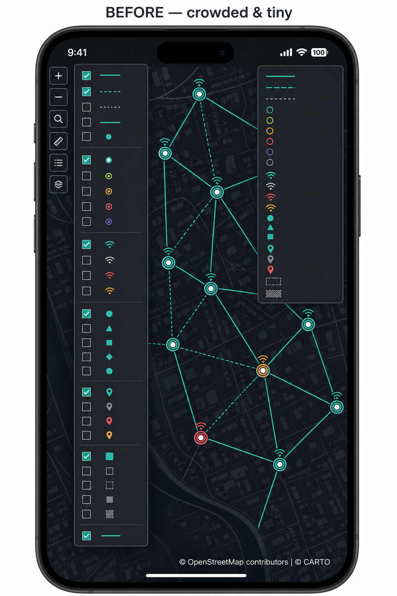
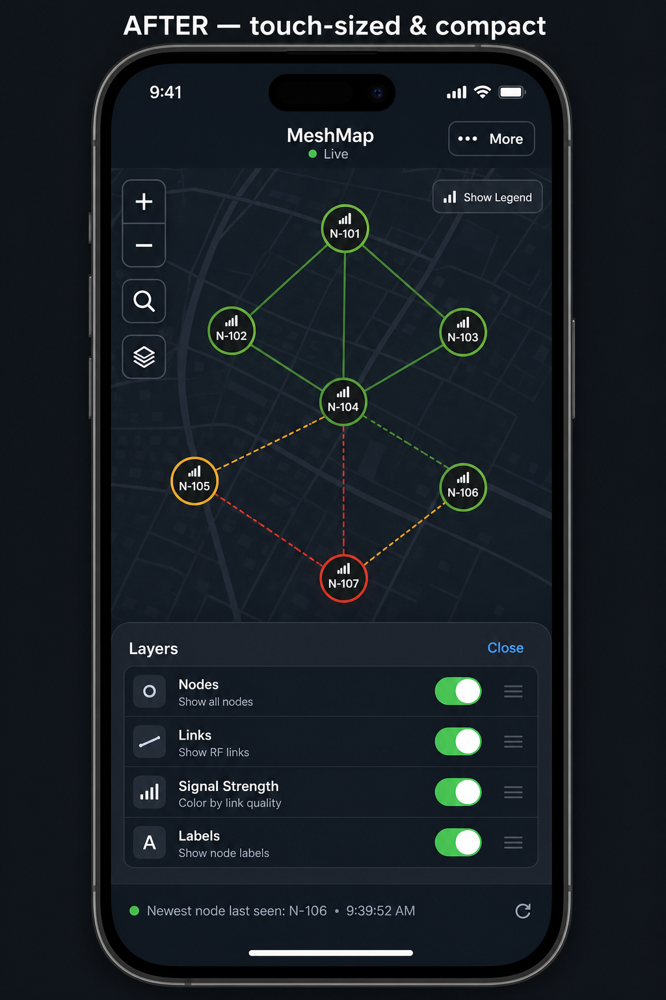
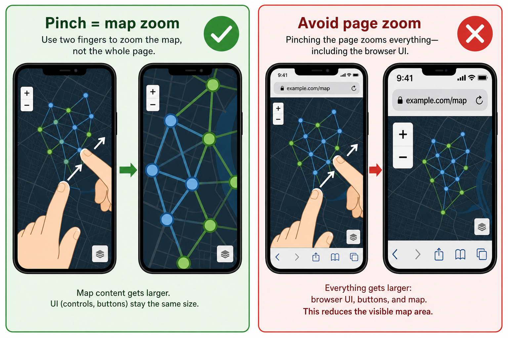
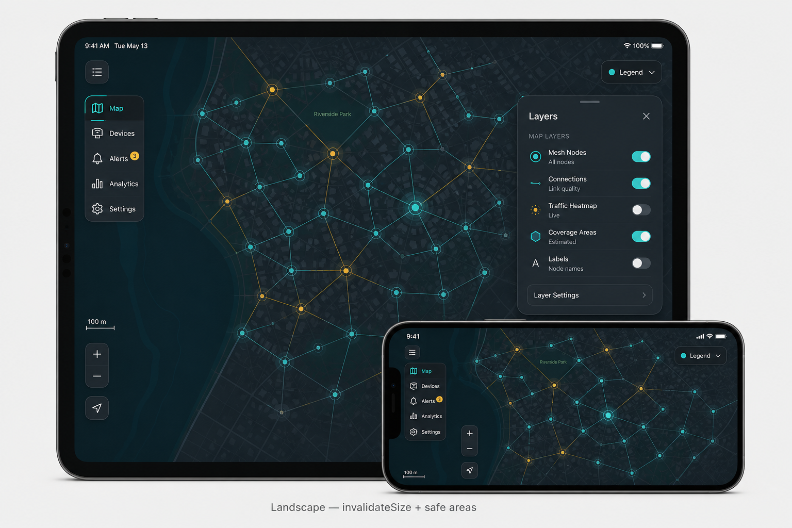

Nodographer · branch mobile-experience
Make the mesh map usable on phones and tablets: fix viewport and gestures, enlarge hard-to-hit controls, and shrink menus that dominate small screens— without a full bottom-sheet redesign.
Illustrative targets for the MVP (not pixel-perfect UI chrome). Assets live in reports/assets/.


Viewport + touch-action / overscroll so two-finger pinch zooms Leaflet tiles instead of scaling the whole browser UI.

After rotate: invalidateSize, safe-area insets, collapsed legend chip, layers as a side card that does not cover full height.

This file is the standalone browser twin for the mobile UX plan. Use the same pattern for future reports in this repo.
| Artifact | Twin |
|---|---|
Plan / report / audit named foo-bar | reports/foo-bar.html |
| Demo / diagram images | reports/assets/ (kebab filenames) |
Cursor canvas *.canvas.tsx (if used) | Same kebab basename under reports/*.html |
reports/assets/.The map UI in frontend/index.html is desktop-first today:
frontend/node_report/index.html)frontend/css/meshmap-default.cssoverflow: hiddenfrontend/js/meshmap-legend.js)invalidateSize on rotate/resize; #map uses bare 100vh@media and small JS. Defer full bottom-sheet
redesign and node-report DataTables overhaul.
Implementation flow:
Files: frontend/index.html, frontend/css/meshmap-default.css
width=device-width, initial-scale=1, viewport-fit=cover.
Do not lock user-scalable=no (a11y).html, body, #map { height: 100%; height: 100dvh; overflow: hidden; }
plus overscroll-behavior: none.resize, orientationchange, and visualViewport resize:
debounce map.invalidateSize({ animate: false }).touch-action: none;
scrollable chrome uses touch-action: pan-y + overscroll-behavior: contain.touch-action: manipulation on control buttons to reduce double-tap zoom on chrome.Files: frontend/css/meshmap-default.css, frontend/index.html
User report: menus too small in some places, too large in others.
@media (pointer: coarse), (max-width: 900px): raise custom controls from 30×30 to
min 44×44 (ruler, layers toggle, view-as-list, search); match Leaflet touch zoom sizing.max-width: 700px): keep zoom, search, layers visible;
move ruler and view-as-list into a compact “More” control.transform: translateX(-50%); shrink font on phones.Files: frontend/css/meshmap-default.css, frontend/js/meshmap-legend.js, small hook in frontend/index.html
height: 500px !important; overflow: hidden with
expanded max-height: min(50dvh, 360px); max-width: min(90vw, 280px); overflow-y: auto;,
larger labels / font-size: 16px, auto-collapse after selection or outside tap on coarse pointers.Files: frontend/css/meshmap-default.css, frontend/js/meshmap-markerFunctions.js, frontend/index.html
max-height: ~40vh; input font-size: 16px.max-width: min(350px, calc(100vw - 32px));
reduce tab min-height; allow scroll; fix maxWidth (currently maxwidth);
increase auto-pan padding for controls/safe areas.leaflet-hash.Manual checks on phone + tablet (portrait and landscape):
frontend/node_report/index.html DataTables (responsive: false, wide columns) — follow-upfrontend/js/meshmap-mobile.js) for invalidateSize,
layer auto-collapse, and mobile-default legend collapse; CSS in meshmap-default.css.mobile-experience; commit/push to K1RKS/nodographer only after confirm.